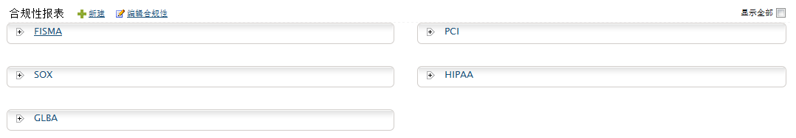
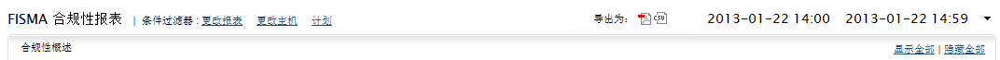

合规性报表
行业机构/政府部门授权合规性报告，确保各行业的IT用户拥有最小安全保障。不符合规定的监管行为会召来严重的刑事责任。于是，我们需要一个必要的，且安全可靠的IT网络合规性报告。EventLog Analyzer可以为IT行业生成主要的合规性报表。

EventLog Analyzer内置的主要合规性报表包括PCI-DSS、 HIPAA、FISMA、SOX和GLBA。同时这个合规性管理软件也考虑到未来合规性的可能要求，为用户提供了可定制自定义合规性的功能，可以生成类如ISO-27001和NIST-1075监管法案报表。甚至您还可以编辑现有的合规性报表，使之符合您的企业的内部需求。
您可以修改现有的合规性报表，使之符合您的特殊需求，也或者创建（+ 创建）一个新的合规性报表，来处理其他必须的IT合规性需求，如ISO 27001/2等。

您可以在单个合规性报表中使用条件过滤器，点击更改报表，可以过滤合规性的组和子组，点击更改主机，可以过滤主机。
点击计划链接，您可以配置规性报表周期性的生成。使用“导入为：”选项，您可以将报表导出为PDF或CSV格式文件。点击日历插件，您可以选择生成报表的数据的时间段。显示全部和隐藏全部链接，可以用来显示或隐藏合规性报表中所有组和子组的报表。
|